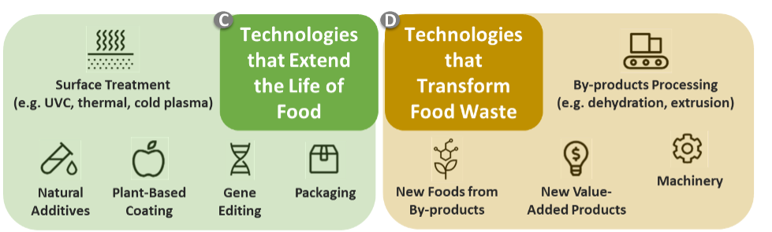
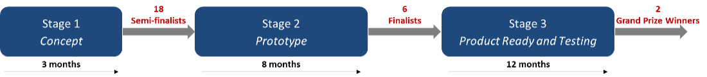
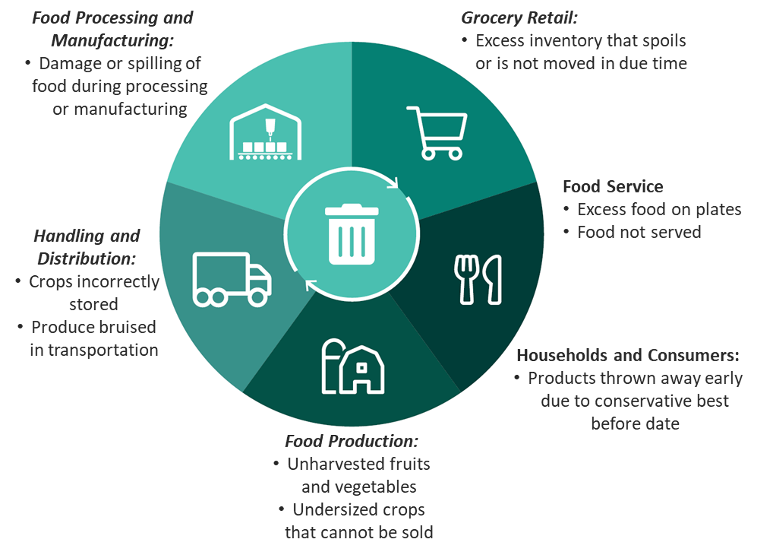

Help you determine if you are eligible to participate under Streams C and D
(Technologies Streams) of the Food Waste Reduction Challenge (herein referred to as “the
Challenge”) funded by Agriculture and Agri-Food Canada (AAFC).
Provide you with directions and explanations to assist you in completing an application
at Stage 1 of the Technologies Streams.
The Food Waste Reduction Challenge has been designed with four distinct streams. Applications
to Stream A and B closed on January 18, 2021. This guide focuses on the application intake
for Streams C and D.
pEach stream of the Challenge consists of three stages. Once selected, semi-finalists from Stage
1 will receive further reporting requirements and instructions for Stage 2.
1.0 About the Food Waste Reduction Challenge
One third of all food produced globally for human consumption goes to waste. This food
accounts for about one quarter of all water used by the agriculture sector each year,
requires land area greater than the size of China, and generates around 8% of global
greenhouse gas (GHG) emissions annually, largely from food waste decomposing in
landfills. Approximately 31% of Canada’s food supply is wasted annually, costing an
estimated $49.5 billion. Meanwhile, one in seven Canadians suffer from food insecurity.
The economic, social and environmental footprint of food waste is too large to ignore.
That is why the Government of Canada is launching the Food Waste Reduction Challenge,
under the Food Policy for Canada, an initiative which serves as a roadmap
for a healthier and more sustainable food system for Canada.
For more details on the definitions of food waste, food supply chain and challenge prize
competitions, please refer to Annex A.
1.1 Challenge Objectives
The Challenge aims to support new innovations and solutions which can help
address the problem of food waste and loss across the supply chain, thereby
reducing the associated economic, environmental, and social costs of food
waste. Collectively, these solutions will help increase food availability,
save consumers and businesses money, reduce GHG emissions and improve the
efficiency of the food sector.
The objectives of the Challenge are to:
Reduce food waste in Canada;
Foster improvements in food waste measurement;
Attract new ideas, partners and resources to invest in solving the
complex problem of food waste;
Prompt new collaborations among non-traditional partners and problem
solvers;
Increase awareness of food waste among Canadians;
Contribute to improving food security and creating jobs;
Build the capacity of new innovators and support their entry into the
market;
Support the development of new industries, services and value-added
goods; and
Increase economic profitability and competitiveness of the Canadian
agri-food sector.
Results achieved through the Challenge will also contribute towards Canada’s
achievement of the UN Sustainable Development target of 50% reduction in
food waste by 2030 and contribute to GHG emission reductions along the
product life cycle.
1.2 Challenge Streams
The Food Waste Reduction Challenge is composed of four different streams:
Stream A: Business Models that Prevent Food Waste (Closed for
applications in January 2021)
Stream B: Business Models that Divert Food Waste (Closed for
applications in January 2021)
Stream C: Technologies that Extend the Life of Food (Open for
applications in May 2021)
Stream D: Technologies that Transform Food Waste (Open for
applications in May 2021)
Stream C focuses on technologies that extend the life of
perishable foods to reduce the creation of food waste by slowing the
degradation mechanism of specific perishable food items and extending the
length of time these food items may be stored without becoming unsuitable
for use or consumption.
Stream D D focuses on technologies that transform food waste
by converting surplus food, food by-products, or food waste into other
products, including: food for humans, food for animals/insects (e.g. animal
feed), or non-food products.
Streams C and D focus on technologies that are at the prototype and testing
phases to improve their effectiveness and make them ready for market within
the next two years.
The field of innovation is vast under all streams. A non-exhaustive list of
examples is provided below to illustrate the breadth of the solutions space
for Streams C and D:

Figure 1: Streams C and D
Solutions Space Examples (non-exhaustive)
Description
This diagram depicts two text boxes that include
examples of solutions that fall under Stream C (Technologies
that Extend the Life of Food) and Stream D (Technologies that
Transform Food Waste). Within the box for Stream C, images and
text for the following examples of solutions are included:
Surface Treatment (e.g. UVC, thermal, cold plasma), Natural
Additives, Plant-Based Coating, Gene Editing, Packaging. Within
the box for Stream D, image and text for the following solutions
are included: By-products Processing (e.g. dehydration,
extrusion), New Foods from By-Products, New Value-Added
Products, and Machinery.
2.0 Applying to the Challenge Streams C and D
2.1 Eligible Applicants
Eligible applicants to the Challenge include the following:
Businesses or other for-profit organizations incorporated in Canada;
Not-for-profit organizations incorporated in Canada;
Indigenous organizations and groups located in Canada;
Post-secondary/academic institutions located in Canada;
Individuals or groups of individuals based in Canada (see below for more
info);
Non-Canadian individuals and entities (see below for more info).
Individual innovators or groups are encouraged to submit an application to
the Challenge, but in order to be eligible to receive funding, they will be
required to establish a Canadian legal entity (such as a company or a
corporation or a not-for-profit organization) capable of entering into
binding agreements in Canada.
Non-Canadian individuals and entities are encouraged to submit an application
to the Challenge, but in order to be eligible to receive funding, they will
be required to establish a legal entity (such as a company or a corporation
or a not-for-profit organization) capable of entering into binding
agreements in Canada. They may also be part of a partnership or consortium
submitting a proposal as long as the applicant organization submitting the
application meets the above criteria.
2.2 Eligible Solutions
Ideas and concepts can originate from anywhere globally, but applicants will
be required to test, demonstrate, and deploy their solutions in Canada.
In order to meet the eligibility requirements, solutions must be aimed at
leveraging innovation to achieve specific outcomes tied to reducing food
loss and waste as identified in the following Challenge statements:
STREAM C - Technologies that Extend the Life of Food
Advance technologies that make perishable foods last longer; preserve food
quality, safety, and nutritional value; and prevent food waste.
STREAM D - Technologies that Transform Food Waste
Advance technologies that transform food waste, food by-products and/or
surplus food into new foods or other products.
For more details on the definitions of perishable foods, extension of
shelf-life, and transformation of food waste, please refer to Annex A.
Solutions need to meet the objectives of the Challenge statements defined
above. If you have started working on your solution prior to this Challenge,
you are still eligible to apply, but as this Challenge is about advancing
technologies, your application should consider and reflect how you are
improving the effectiveness, competitiveness and scalability of your
technology.
As part of the Challenge, activities implemented by participants could
include, but are not limited to: development, prototyping, piloting and
testing of solutions; partnership building, customer acquisition, and market
growth activities; capacity building activities; and any other
implementation activities to meet the objectives of the Challenge
statements.
3.0 Challenge Structure for Streams C and D
3.1 Stages
The Challenge follows a stage-gated approach. At each stage, different financial
and non-financial incentives will be available to successful participants. At
every stage, solutions will be reviewed against the assessment criteria, and
selected winners will be invited to move to the following stage

Figure 2: Streams C and D
Stage-Gated Structure
Description
This diagram shows the Challenge process with three
stages represented by three text boxes connected by arrows. The
first text box is titled Stage 1: Concept Application. Under the
first text box, an arrow indicates the duration of the first
stage as two months. A larger arrow leaving from the Stage 1
text box, indicates 18 semi-finalists as an outcome of this
stage and leads to the second text box. The second text box is
titled Stage 2: Prototype. Under the second text box, an arrow
indicates the duration of the second stage as eight months. A
larger arrow leaving from the Stage 2 text box, indicates 6
finalists as an outcome of this stage and leads to the third
text box. The third text box is titled Stage 3: Product Ready
and Testing. Under the third text box, an arrow indicates the
duration of the third stage as 12 months. A larger arrow leaving
from Stage 3 indicates 2 grand prize winners as an outcome of
this stage.
Stage 1 – Concept:
You complete an online submission describing your concept. In the application,
you will need to show a deep understanding of the problem you are trying to
solve with your technology, the status of your technology, and how you are
advancing this technology to improve its effectiveness, competitiveness, and
scalability to meet the overall Challenge objectives and the assessment
criteria. For more information, please refer to Table 2 in section 4.2.
Note: This guide will help you complete an application at Stage 1. If
selected, successful participants from Stage 1 will receive further
reporting instructions and requirements for Stage 2. The following
information is provided to give you an idea of what would be required of you
for Stage 2 and Stage 3 of the Challenge, if you are selected as a
semi-finalist at Stage 1.
Stage 2 – Prototype:
In this stage, you will be required to build or complete an existing prototype of
your technology. In a laboratory environment, you will build and integrate the
basic technological components to test your prototype based on the assessment
criteria. At the end of this stage, all participants should have achieved or
exceeded Level 5 of the Technology Readiness Level scale (see Annex A for
definition).
Stage 3 – Product Ready and Testing
In this stage, you will be required to advance your prototype until it is ready
to be tested in an operational environment, and to test your technology in an
operational environment with at least one implementation partner of your choice
(i.e. an agriculture or agri-food business across the supply chain, based on the
relevance of the solution). You will be required to evaluate the effectiveness
of your solution by measuring and reporting against the assessment criteria. At
the end of this stage, all participants should have achieved or exceeded Level 7
of the Technology Readiness Level scale (see Annex A for definition).
3.2 Prize Amounts
Up to $6.5 million in total will be awarded to semi-finalists, finalists and
grand prize winners under Streams C and D of the Challenge:
Stage
Duration
Number of winners
Prize amount per winner
Stage 1: Concept
3 months
Up to 18 semi-finalists
$100K per semi-finalist
Stage 2: Prototype
8 months
Up to 6 finalists
$450K per finalist
Stage 3: Product Ready and Testing
1 year
2 winners
(1 per stream)
$1M per winner
Important note:
The number of winners and prize amounts may vary depending on the
applications received.
4.0 Results and Assessment Process
4.1 Direct Results
The direct results of Streams C and D are the advancement of new technologies
that extend the life of perishable foods or transform food waste into other
products. Solutions will be assessed along different dimensions (e.g.
environmental, economic, social, and technical) as measured by the assessment
criteria.
4.2 Assessment Criteria
Below are the overall assessment criteria for Streams C and D. Each of the eight
criteria will be assessed at every stage of the Challenge, with a different
focus or weighting at each stage. At Stage 1, assessment will be based on the
applicant’s concept application. At Stages 2 and 3, additional information and
data will be needed for assessment and these requirements will be communicated
to winners of these stages.
Assessment Criteria at Different Stages
Assessment Criteria
Stage 1
Stage 2 and 3
1. Technology effectiveness
For Stream C: Increase in shelf life in both absolute
values (i.e. number of days) and relative values (i.e.
percentage increase)
For Stream D: Effectiveness and efficiency of the
technology in producing output from input (i.e. yield
output/input and other relevant indicators)
Technology effectiveness measures reported during prototype and
solution testing
2. Applicability and scalability of solution
Coverage potential and applicability of solution (e.g. types of
foods covered, range of application contexts and locations)
Evidence of scalability of solution from testing data, ability
to expand use of solution
3. Innovation
Novelty of technology, added-value over existing solutions,
transformative potential of solution
Innovation in technology development, implementation, and
addressing challenges. Opportunities for the sector created by
solution
4. Commercialization
Understanding of commercialization potential and challenges for
solution
Plan for commercialization and market adoption, and mitigation
of challenges
5. Economic assessment of solution
Economic and financial benefits of solution, costs associated
with solution
Direct measurement of economic return. Analysis of financial
sustainability and profitability
6. Environmental assessment of solution
Environmental benefits and risks (including GHG emissions).
Mitigation measures for environmental risks
Measurement and monitoring of environmental benefits and risks
(including GHG emissions)
7. Potential for food waste reduction
Conceptual analysis of solution impact on food waste reduction
Conceptual analysis of solution impact on food waste reduction
Estimates of solution impact on food waste reduction
8. Food safety and food properties
This criterion is relevant to all applicants except
applicants in Stream D who are transforming food waste into
non-food products. Food properties include, but are not
limited to appearance, taste, chemical properties, and
nutritional value
Anticipated impact of technology on the food safety and
properties of the food output
Measured impact of technology on the food safety and properties
of the food output during prototype and solution testing
Important note:
The number of winners and prize amounts may vary depending on the
applications received.
4.3 Selection Process
AAFC will convene an independent and voluntary external review committee composed
of subject matter experts (e.g. representatives of private sector, stakeholder
groups, academia) to assist in the assessment of applications. The external
committee will review applications and provide recommendations to support AAFC
in determining the semi-finalists, finalists and winners. Additional expertise
from other government departments may be sought in the review process, based on
application content.
AAFC will take the necessary measures to avoid conflict of interest for any
external review committee members or others involved in the assessment process,
and will execute non-disclosure agreements to protect applicants’ information.
Further to the external review committee’s recommendations, AAFC will select and
announce the semi-finalists, finalists and winners, as applicable to each stage
of the Challenge. All of AAFC’s decisions and selections will be final and not
subject to appeal.
Please note that even if a solution meets all eligibility and assessment
criteria, the submission of an application creates no obligation on the part of
the Minister or of Agriculture and Agri-Food Canada officials to provide funding
for the proposed project. The Minister retains discretion to determine whether
an application will ultimately receive funding.
5.0 How to Apply
These application instructions apply to Stage 1 of Streams C and D of the Challenge. For
detailed step-by-step instructions on how to answer each question in the application form,
please refer to Annex B.
Streams C and D – Stage 1 Application
Only applications submitted through the Impact Canada website via the
designated Challenge application portal: https://impact.canada.ca will be
accepted. Applications must be submitted through the portal no later than
August 31, 2021 at 11:59 PM Pacific Daylight Time.
Additional Challenge information, including process, timelines, specific
deadlines, prizes, and Frequently Asked Questions (FAQs), are available on the
Challenge website.
In order for an application to be considered for the Challenge, applicants must
complete and submit the following documents online by the closing date and time
indicated above, and on the Challenge website. A complete application package
consists of:
Challenge application form:
Applicant details
Proposed solution details
Declaration
Survey (optional)
Letters of support from partners (if applicable);
Confirmation of legal entity and/or not-for-profit status (if applicable).
Incomplete applications will not be assessed or further considered.
Application Details
Challenge application form
Applicants must fill in the application form available online on the Impact
Canada website. Solution details must be concise, but comprehensive (including
links to websites in a response will risk elimination especially if they are too
general in scope and not addressing a specific question or issue). The form
consists of the following four sections:
Section 1: Applicant details
This section of the form requests basic information on the lead
organization applying to compete in this Challenge and to receive
funding if successful, as well as partner organizations supporting the
development of the proposed solution.
Section 2: Proposed solution details
In this section, you must identify the Challenge stream (C or D) to which
you are applying, provide details on your proposed solution and answer
questions that relate to the assessment criteria for Streams C and D to
allow for a thorough assessment of the solution against these criteria.
Note that this is the main section that will be used by the external
review committee in the assessment process. Make sure to include in this
section all relevant information for the external review committee’s
consideration. For detailed step-by-step instructions on how to answer
each question in the application form, please refer to Annex B.
Section 3: Declaration
In this section, you must review and accept the terms and conditions for
the Challenge, agree to the due diligence process as described below,
and review and accept the Consent for Use, Disclosure and Copyright
requirements.
Section 4: Survey (optional)
This section collects information on your experience with this Challenge,
information about your organization, as well as demographic information.
Note that any data collected will be used strictly for administrative
purposes to help us understand if, and how, Challenges are an effective
tool, and to improve upon their design in the future. The data collected
in this survey will be aggregated and no individual answers will be
published. Your answers to this survey will not be used in the
assessment process and will not affect your chances of success in this
Challenge or in any other federal funding application.
Attachments (optional)
The following attachments are optional at this stage of the application and
should be provided by applicants only when available:
Letters of support from partners (if applicable)
If the lead organization is partnering or collaborating with other
organizations in the development of the proposed solution, applicants
must provide information about partner organizations in Section 1 of the
application form. Applicants may also provide letters of support from
partners that include details on their role and engagement.
Confirmation of legal entity and/or not-for-profit status (if
applicable)
This can be a copy of the status certificate, incorporation documents,
patent letters, or articles of incorporation (if applicable). Note that
the lead (principal) applicant is required to establish a Canadian legal
entity capable of entering into legally-binding agreements to receive
grant funding. This requirement can be completed after submission of the
application, but prior to receiving any funding.
Visuals
One visual illustrating the functionality of your technology, e.g. visual
representation of solution components; One visual illustrating the
process for how your technology is integrated within the food system,
e.g. process, flow or steps diagrams.
6.0 If You Are Selected
Stages
Following recommendation from the Challenge external review committee, approximately 18 applicants will be selected in Stage 1 to be semi-finalists in the Challenge. Semi-finalists will receive a prize amount in the form of a grant and will be invited to proceed into Stage 2 of the Challenge. Semi-finalists should be committed to meeting the requirements of Stage 2 (Prototype).
Grant Agreement
In order to receive the prize amount at each stage, each successful semi-finalist, finalist, and winner will be required to enter into a grant agreement with AAFC.
Prior to entering into the grant agreement, all selected participants will undergo a due diligence process to confirm that they meet all requirements to receive Food Waste Reduction Challenge grant funding and that they have the capacity to undertake the work outlined in their concept application. The due diligence process may include, when applicable, the review of the following documents:
Documentary proof of establishing that the lead applicant constitutes a Canadian legal entity capable of entering into legally-binding agreements and may receive Food Waste Reduction Challenge grant funding;
Financial information, such as financial statements;
For Quebec-based participants, documentation confirming compliance with the Province of Quebec’s M-30 legislation prior to entering into an agreement with AAFC.
M-30 Act (for Quebec)
The Province of Quebec’s M-30 legislation can only apply to Quebec-based applicants. It is the Act Respecting the Ministère du Conseil exécutif (R.S.Q., c. M-30).
More information on the Act is available online or by contacting the Ministère de l’Agriculture, des Pêcheries et de l’Alimentation (MAPAQ) at dpci@mapaq.gouv.qc.ca.
M-30 applies to various types of Quebec organizations; for example, organizations located in Quebec and receiving more than half of their financing from the Government of Quebec may be subject to the Act.
All Quebec-based organizations will have to address this matter and demonstrate their compliance with the Act during the project assessment process, and prior to entering into a grant agreement.
7.0 General Terms and Conditions
Applicants to the Challenge agree to the following when submitting their application:
Applicants agree to comply with all applicable laws;
Applicants must be able to demonstrate ownership of, or permission to use any intellectual property (IP) used in the Challenge and provide necessary permission to AAFC for the purpose of administrating this Challenge;
Applicants warrant that all information given in and with the Challenge application form for this solution is, to the best of their knowledge, complete, true and accurate;
AAFC has the discretion to cancel this Challenge or any part thereof at any time.
Unpaid Debts to the Government of Canada
A recipient of AAFC funds must declare any amounts owing to the Government of Canada. Any amounts due to the recipient under AAFC programs may be set off against any such amounts owing to the Government of Canada under any agreement or any legislation with the Government of Canada.
Lobbying Activities
The applicant must ensure that any person lobbying on behalf of the applicant is registered and in compliance with the Lobbying Act. More information on the obligations in the Lobbying Act can be found on the website of the Commissioner of Lobbying of Canada.
Conflicts of Interest
Current or former public servants or public office holders are required to avoid conflict of interest situations while employed by the federal government and for a period of time following their service. The applicant acknowledges that any individuals who are subject to the provisions of the Conflict of Interest Act, the Values and Ethics Code for the Public Sector, the Conflict of Interest Code for Members of the House of Commons, any applicable federal values and ethics code or any applicable federal policy on conflict of interest and post-employment shall not derive any direct benefit resulting from this application unless the provision or receipt of such benefit is permitted in such legislation, policy or codes.
Privacy
Use and/or Disclosure
The personal and/or business information contained in, accompanying and/or submitted in support of this application is being collected under the authority of the Department of Agriculture and Agri-Food Act and may be used by AAFC or disclosed to third parties, including other government departments, to:
assess and review the eligibility of the applicant and the solution under the applicable AAFC program;
verify the accuracy of the information provided in or with the application form and additional documents;
determine eligibility for other AAFC, Government of Canada or provincial programs from which the applicant might benefit;
assess the efficiency of the Challenge model in furthering departmental/Government of Canada priorities; and
evaluate the scope, direction and effectiveness of agricultural programming and research in Canada.
The applicant consents that the information may also be used for the purposes of contacting the applicant should additional information be required; validating the applicant’s credentials; facilitating payment of the grant in the event the application is successful; performing program administration; and conducting evaluation, reporting, and statistical analysis.
Personal information will be treated and disclosed in accordance with the Privacy Act. You have the right to access your personal information held by Agriculture and Agri-Food Canada and to request changes to correct personal information by contacting the AAFC Access to Information and Privacy Director at aafc.atip-aiprp.aac@canada.ca.
For more information about AAFC’s privacy practices, you may refer to the following Personal Information Banks: Public Communications PSU 914 and Outreach Activities PSU 938.
Business information will be disclosed only in accordance with the provisions of the Access to Information Act.
Information on the Privacy Act and the Access to Information Act is available on the following website: http://laws.justice.gc.ca. For further information about these Acts, please contact the Access to Information and Privacy Director at aafc.atip-aiprp.aac@canada.ca.
Copyright permission
AAFC may disclose, reproduce and distribute any part of or the whole of the documentation provided in or with the application form, within AAFC and to its authorized third parties, including other government departments, for purposes consistent with the receipt, assessment and subsequent treatment of the application.
Intellectual property
Intellectual property created by an applicant will remain the property of the applicant.
Where it is to the advantage of Canadians, and not detrimental to the goals of the recipients, AAFC may negotiate the shared use of intellectual property developed by recipients or through a third party. The rights to use this material may include further use of data for research purposes and/or publishing the intellectual property online, in printed documents and in publications.
8.0 Contact us
For any questions or clarifications regarding the Food Waste Reduction Challenge, please contact the Agriculture and Agri-Food Canada Food Programs and Challenges Division team: aafc.fwrc-drga.aac@canada.ca
Updates will be provided on the Challenge website, where applicants can review the FAQs and find out the latest news.
Applicants are encouraged to follow us on social media for the latest developments.
ANNEX A – DEFINITIONS
View all definitions
A challenge prize competition presents a clear problem or objective and offers a reward to the first or best solution to the problem, as judged by a panel of experts, based on a set of pre-determined criteria. Challenge prizes work best in addressing problems that are stuck or in domains that are new and emerging. In both scenarios, they serve to accelerate solutions and to bring new perspectives and approaches forward.
For the purpose of this Challenge, food waste is defined as inclusive of any type of food loss and waste that occurs at any stage of the food supply chain from farms to consumers. It refers to all food or part of food that is grown, harvested, processed, manufactured or prepared for human consumption, but never eaten by people.
The food supply chain is the network of actors and processes that describe how food moves from production to our tables. This network includes: farms and food production sites; post-harvest handling and storage; food processing and manufacturing facilities; distribution and transportation networks; grocery retail; food service industry such as restaurants and institutional canteens; and consumers at home.
Examples of food loss and waste across the food supply chain are illustrated in the figure below:

Description
This diagram depicts a circle illustrating the food supply chain as a cycle. The circle is divided into five sections, with icons representing each of the following section: food production (represented as a farm), handing and distribution (represented as a truck), food processing and manufacturing (represented as a factory), grocery retail (represented as a shopping cart) and food service as well as households and consumers (represented by a fork and knife). In the middle of the circle is a garbage can surrounded by two circular arrows indicating that food waste occurs at all stages of the food cycle. Outside the circle, the figure lists examples of food waste across each stage of the food supply chain. Under food production, it lists: unharvested fruits and vegetables; and undersized crops that cannot be sold. Under handling and distribution, it lists: crops incorrectly stored; and produce bruised in transportation. Under food processing and manufacturing, it lists: damage or spilling of food during processing or manufacturing. Under grocery retail, it lists: excess inventory that spoils or is not moved in due time. Under food service, it lists: excess food on plates; and food not served. Under households and consumers, it lists: products thrown away early due to conservative best before date.
Technology Readiness Level (TRL) is a widely-used indicator of degree of development of a technology toward deployment on a scale from 1 to 9 with 9 being fully deployment-ready. For more information on Technology Readiness Levels, please visit https://www.ic.gc.ca/eic/site/080.nsf/eng/00002.html.
For Streams C and D in this Challenge, there is no TRL requirement at the application stage (Stage 1). However, all applicants are required to achieve or exceed TRL milestones at Stage 2 (Level 5) and Stage 3 (Level 7). The descriptions for those two levels are included below:
Level 5: Component and/or validation in a simulated environment
The basic technological components are integrated for testing in a simulated environment. Activities include laboratory integration of components.
Level 7: Prototype ready for demonstration in an appropriate operational environment
Prototype at planned operational level and is ready for demonstration in an operational environment. Activities include prototype field testing.
Perishable foods represent foods that have a limited shelf life, spoil easily, decay, or become unsafe for consumption. Perishable foods include the following:
Dairy and Eggs (e.g. milk, cheese, eggs)
Meat, poultry, seafood
Produce and field crops (e.g. fruits, vegetables, nuts, beans, grains)
Processed food (e.g. bakery products)
Extension of shelf-life in Stream C of this Challenge, refers to the process that slows the degradation mechanism of a specific perishable food item and extends the length of time this food item may be stored without becoming unsuitable for use or consumption.
Transformation of food waste in Stream D of this Challenge, refers to the process/technology that converts surplus food, food by-products, or food waste into another product, including:
Transformation into food/food ingredient for humans
Transformation into feed or feed ingredients for animals/insects
Transformation into non-food products or input for non-food applications
ANNEX B – HOW TO COMPLETE THE APPLICATION FORM
Detailed Application Instructions for Section 2 of the Application Form
Section 2 of the application form is the main section that will be used by the external review committee in the assessment process. Below are detailed instructions to help you submit a good quality application.
Q2.1 Stream Selection
Please make sure to correctly identify which stream (C or D) you are applying to. Remember that Stream C covers technologies that extend the life of food, while Stream D covers technologies that transform surplus food, food by-products or food waste to new products. After selecting the stream, you will be asked to categorize your solution to help facilitate the assessment process. If your solution falls into multiple categories, please select the primary category.
Q2.1.1 STREAM C: Which category fits best the type of technology you are developing? If your solution falls into multiple categories, please select the primary category.
Edible coating and natural additives solutions: This category is for edible materials added to food in order to extend its shelf-life, and it includes edible coating solutions, edible natural additives or other edible elements added to food.
Non-Edible packaging solutions: This category is for non-edible materials added to food, most likely for packaging purposes, but it can also include non-edible stickers placed on food.
Food treatment solutions (e.g. thermal, non-thermal, hurdle technology): This category covers the treating of food (primarily on its surface) to help prevent decay mechanisms from occurring. Some of these technologies include the use of UV light, cold plasma, electric pulses, thermal treatments, and others.
Food processing approaches: This category covers all sorts of food processing approaches that are applied to food in order to preserve it for a longer time.
Gene editing: This category is for the use of gene-editing technology for the extension of shelf-life.
Other. Specify: If the type of technology you are working on does not fit into any of the above categories, then please specify a broadly-defined category for your technology.
Q2.1.2 STREAM D: Which category fits best the type of technology you are developing? If your solution falls into multiple categories, please select the primary category.
Transformation into food/food ingredient for humans: This category covers technology where the purpose of transformation is for edible outputs for humans.
Transformation into feed or feed ingredients for animals/insects: This category covers technology where the purpose of transformation is for animals/insects feed.
Transformation into non-food products or input for non-food applications: This category covers all other technology not included in the previous categories (i.e. non-food applications). Examples include textiles, packaging, value-added products, or bioenergy.
Q2.2 Why your solution?
This is your elevator pitch to convince the jury why your technology should be selected in the challenge. In your pitch, you should use brief, concise, non-technical, and simple language to describe your proposed technology, how it works, and its comparative advantage over existing technologies.
The purpose of this question is to allow you to concisely and precisely make your case for how your solution responds to the Challenge statements for Stream C (i.e. Advance technologies that make perishable foods last longer; preserve food quality, safety, and nutritional value; and prevent food waste) or Stream D (i.e. Advance technologies that transform food waste, food by-products and/or surplus food into new foods or other products). Remember that the purpose of these two streams is to make significant advances with respect to novel technologies. Include a brief description for how your technology works and how is it different than existing technologies. Please also remember that the external review committee (i.e. “the jury”) is composed of a diverse group of professionals covering different areas of expertise. Accordingly, you should use simple language in your answer and avoid the use of highly technical language to ensure you are addressing the broad diversity of expertise and backgrounds of the external review committee.
Q2.3 Why you?
Tell us about yourself, your background, what brought you to work on your proposed solution and why you are the one who is going to advance this solution (e.g. include information about your skills and/or partners).
The purpose of this question is to give you the opportunity to talk about the path that brought you to the Challenge and to your work on your proposed solution. In your narrative, you can include some of the barriers that you had to overcome and demonstrate that you are ready to advance your solution to reduce food waste.
Q2.4 [Innovation] Describe in detail how your technology works to achieve the intended outcomes.
For Stream C: You should explain how your technology extends the life of food.
For Stream D: You should explain how your technology transforms food waste into other products.
This question asks for a detailed description of your solution and how it works. Your description needs to be clear and well-defined using simple language. Make sure to explain in detail what the solution is, what technology/tools it employs, how it works, what conditions it needs to work, and how it specifically produces the intended outcomes (i.e.. extension of shelf life or transformation of food waste into other products). Note that this question is linked to the assessment criterion on innovation, therefore, make sure that your description is not generic and that it is focused on the innovative aspect of your technology.
[Optional Attachment] You can attach one (1) visual illustrating the functionality of your technology (for example, visual representation of solution components).
To illustrate your written description, you have the chance to attach only one visual representation of the functionality of your technology, for example a visual representation of the components of your technology, the inner workings of your technology, or the “scientific processes” in your technology that are extending the life of food or transforming food waste into other products.
Q2.5 [Innovation] Describe how your technology or its application is different from existing solutions.
Innovation is defined as the application of ideas and methods that are novel and useful. For this question, first identify the space of existing technologies and their limitations, then present how your solution will advance the technology in this space. Make sure to clearly explain what is novel and innovative in your technology compared to existing technologies. If your technology has been deployed in the market, make sure to explain what new elements you are working on to advance the technology and improve its effectiveness and reach. Finally, you can consider potential opportunities for your solution in the future and look beyond the direct application of your solution. For example, will your solution trigger any transformation or change to food systems and the food sector? If so, identify how you envision this potential for transformation and change to materialize.
Q2.6 [Applicability and Scalability] The following questions are related to the assessment criteria on applicability and scalability.
Q2.6.1 Describe in detail how your technology can be applied and integrated within the food system (from farm to plate) and how scalable this application can be (e.g. include type of food, location on the supply chain, integration into existing processes).
Applicability and scalability are defined as the capability of the solution to cope and perform well under an increased or expanding workload, scope, or context. They are key criteria in this Challenge, and solutions that can only be used by one unique end user will not be selected. Please explain how your technology will be used within the larger food system, for example at what segments of the supply chain from farm to plate will your technology be used to extend shelf-life of food or to transform food surplus, food by-products or food waste into other products. You should explain what requirements are needed at each segment of the supply chain for your technology to be used effectively. You should also clarify what types of food your technology can be applied to. Finally, you should present how your technology can be used by an increasing number of end users and what opportunities for expansion you foresee across contexts, geography (national, international coverage), and food supply chain.
Q2.6.2 What categories of foods are covered by your technology? Select all that apply.
For Stream C: Indicate which food category will have a longer shelf-life after application of your technology.
For Stream D: Indicate which food category your technology will divert and transform food waste into other products. For Stream D, note that the categories below should only reflect the food category of the input (food surplus, by-product or waste being used in the transformation process). It does not include the potential food category of the output or the product resulting from transformation.
Dairy and Eggs (e.g. milk, cheese, eggs)
Meat, poultry, seafood
Produce and field crops (e.g. fruits, vegetables, nuts, beans, grains)
Processed food (e.g. bakery products)
Other. Specify:____________
Q2.6.3 Where in the food supply chain can your technology be applied? Select all that apply .
Primary Production (e.g. farm)
Handling and Storage (e.g. post-harvest)
Food Processing and Manufacturing
Transport and Distribution
Grocery Retail
Food Service (e.g. restaurants, institutions such as hospitals, school cafeteria)
Households and Consumers
Other. Specify:____________
Q2.7 [Technology Effectiveness] The following questions are related to the assessment criterion on technology effectiveness.
For Stream C: Increase in shelf life in both absolute values (i.e. number of days) and relative values (i.e. percentage increase)
For Stream D: Effectiveness and efficiency of the technology in producing output from input (i.e. yield output/input and other relevant indicators)
Q2.7.1 How do you plan to measure the technological effectiveness of your solution?
The purpose of Streams C and D of the Challenge is to advance new technologies and improve their effectiveness. In Stages 2 and 3, as you start piloting and testing your technology, you will be required to directly measure its effectiveness using a rigorous and scientific methodology. At Stage 1, for this question, please discuss your approach and vision for how you will test and measure the effectiveness of your solution at either increasing shelf-life for Stream C or transforming input to output for Stream D. Include in your answer any potential support, techniques, methods, and technology you will need.
Q2.7.2 What are your estimated/target technology effectiveness measures when your solution is applied in an operational environment?
At Stage 1, you need to have target values for your technology measures, as defined by your plan outlined in the previous question. These target values can be based on a combination of research literature reviews, modeling data, early testing data if available, or other data sources. Make sure that you properly reference all data and explain your reasoning and calculations. It is critical that you justify how you obtained those target values. In Stages 2 and 3, you will be prototyping and developing your solution to meet those target values for technology effectiveness.
Q2.8 [Commercialization] The following questions are related to the assessment criterion on commercialization.
Q2.8.1 What is the current status of your technology? What is its Technology Readiness Level (TRL)? What is your timeline to develop a prototype and get it ready for testing in an operational environment?
TAt Stage 1, applicants might have solutions at different levels of readiness: some might be at the idea/conceptual stage, and others might have early prototypes. In your response, please describe the status and level of readiness of your technology and include the Technology Readiness Level (TRL). For more information on Technology Readiness Levels, please visit https://www.ic.gc.ca/eic/site/080.nsf/eng/00002.html. While there is no TRL requirement at the application stage (Stage 1), all applicants are required to achieve or exceed TRL milestones at Stage 2 (Level 5) and Stage 3 (Level 7). With those TRL milestones in mind, please concisely describe your plan, with a high-level timeframe, to develop a prototype and get it ready for testing in an operational environment.
Q2.8.2 Did you test your idea or prototype with target users of your technology? What sort of feedback/response did you get from those potential users?
In this question, please indicate if you have conducted any consultations or engagements with potential users of your technology, such as farmers, agri-food businesses, etc. Summarize the main findings of these engagements and discuss how they affected your design and plan for your technology.
Q2.8.3 What potential challenges to commercialization do you anticipate and how can you address them to reach your goal?
In this question, identify any barriers to commercialization of your technology that might arise and how you will address them. Discuss how your design, prototyping and testing will be adapted to ensure successful commercialization in the future. Commercialization might also involve behavioral change. Please discuss how you will manage this change to facilitate adoption of your technology.
Q2.8.4 Are there regulatory considerations to your solution that would impact the path to commercialization? What are they and how can you address them?
Consider and identify any potential regulations that are pertinent to the implementation of your technology in Canada. Discuss how you will meet regulatory requirements and describe your plan for compliance. Below is a non-exhaustive list of examples of national Acts and regulations that might impact your solution. Note that there are also municipal, provincial, and territorial regulations that you may need to consider.
Q.2.9 [Economic assessment of solution] The following question is related to the economic assessment of your solution.
Q.2.9.1 What is the economic case for your solution? Include analysis of economic and financial benefits of using your solution compared to costs associated with technology development and deployment.
In this question, you should assess the economic benefit of your solution compared to its development and deployment cost. You should identify and describe the type of economic value created by your solution. This economic value might be directly linked to savings from food waste reduction, but there could be other economic benefits generated by your solution to end users and to food systems, in general. Try to quantify those financial returns to end users and other stakeholders in the food system, as applicable. In parallel, you should quantify and estimate costs associated with your solution. These cost values will not be used to determine funding amounts from the Challenge, but are important for the purpose of assessing the economic and financial feasibility, profitability and sustainability of your solution. You need to determine two types of costs: 1) costs associated with the development and commercialization of the solution that you, as a solution developer will bear, and 2) costs associated with acquiring and using your solution that end users are expected to bear. Compare those costs with the financial returns to justify the business and economic case for your solution.
Q.2.9 [Economic assessment of solution] The following question is related to the economic assessment of your solution.
Q.2.9.1 What is the economic case for your solution? Include analysis of economic and financial benefits of using your solution compared to costs associated with technology development and deployment.
In this question, you should assess the economic benefit of your solution compared to its development and deployment cost. You should identify and describe the type of economic value created by your solution. This economic value might be directly linked to savings from food waste reduction, but there could be other economic benefits generated by your solution to end users and to food systems, in general. Try to quantify those financial returns to end users and other stakeholders in the food system, as applicable. In parallel, you should quantify and estimate costs associated with your solution. These cost values will not be used to determine funding amounts from the Challenge, but are important for the purpose of assessing the economic and financial feasibility, profitability and sustainability of your solution. You need to determine two types of costs: 1) costs associated with the development and commercialization of the solution that you, as a solution developer will bear, and 2) costs associated with acquiring and using your solution that end users are expected to bear. Compare those costs with the financial returns to justify the business and economic case for your solution.
Q2.10 [Environmental assessment of solution] The following questions are related to the environmental assessment of your solution.
Q2.10.1 What environmental benefits are expected to be created by the solution?
In this question, you should concisely summarize the environmental impact assessment of your solution, focusing on the environmental benefits that are directly associated with the use of your solution. Some environmental benefits will directly stem from the reduction of food waste, but there could be other environmental benefits that you can identify. If you are able to quantify the environmental benefits, you can include measures such as the impact of your solution on greenhouse gas (GHG) emissions, water usage, waste generated, and other environmental indicators, as applicable. Please explain how you calculated these numbers and include any assumptions and coefficients used.
Q2.10.2 What environmental risks do you anticipate and how will you mitigate them?
In this question, you should concisely summarize the environmental impact assessment of your solution, focusing on the environmental risks that are directly associated with the use of your solution. If you are able to quantify the environmental risks, you can include measures such as the impact of your solution on greenhouse gas (GHG) emissions, water usage, waste generated, and other environmental indicators, as applicable. Please explain how you calculated these numbers and include any assumptions and coefficients used. Discuss how you can mitigate those risks through adaptation in the design or the deployment of your technology.
Q2.11 [Potential for Food Waste Reduction] Based on your own analysis, how does your technology contribute to reducing food waste?
For this question, you should link how the use of your technology will contribute to food waste reduction. If you are able to quantify the volume of food waste reduction (in relative measures or absolute values), you can include those measures, but make sure you explain how you calculated these numbers and include any assumptions and coefficients used.
Q2.12 [Food Safety and Food Properties] This question is relevant to all applicants except applicants in Stream D who are transforming food waste into non-food products. If this question does not apply to you, please enter “Not Applicable” in the text box below:
Q2.12.1 How does your technology impact the food safety and properties of your food output? Food properties include, but are not limited to appearance, taste, chemical properties, and nutritional value.
Unless you are transforming food surplus, food by-products, or food waste into non-food products or for non-food applications, you will be assessed on the assessment criteria on Food Safety and Food Properties. In Stage 1, you are required to discuss the anticipated impact of the use of your technology on food safety and food properties. For Stream C, you must discuss how the application of your technology for extension of shelf-life could affect food safety and food properties including, but not limited to appearance, taste, chemical properties, and nutritional values. For Stream D, you must discuss how your technology impacts the food safety and food properties of the product of your transformation (i.e. your output). In Stages 2 and 3, you will be required to include testing of food safety and food properties as part of your prototyping and testing requirements.